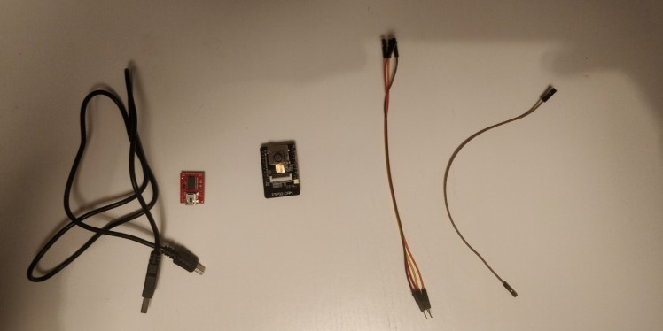
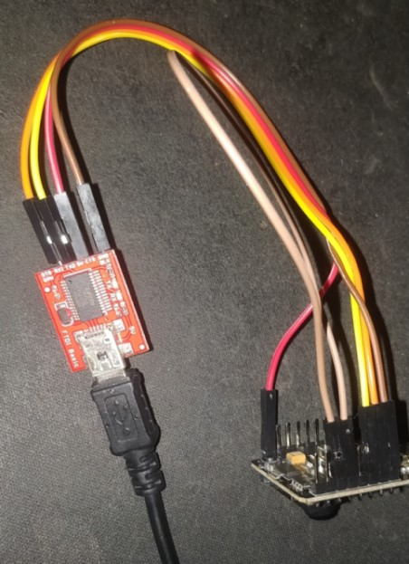
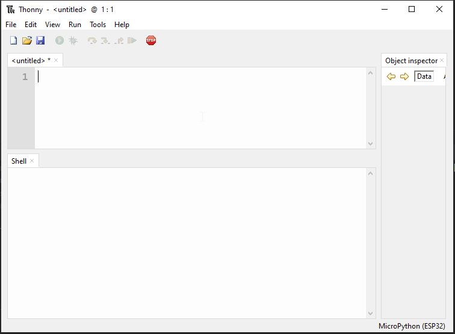
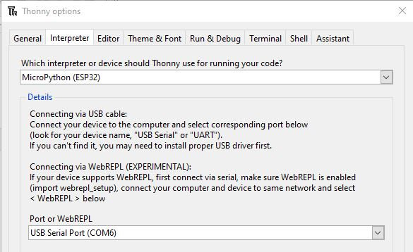
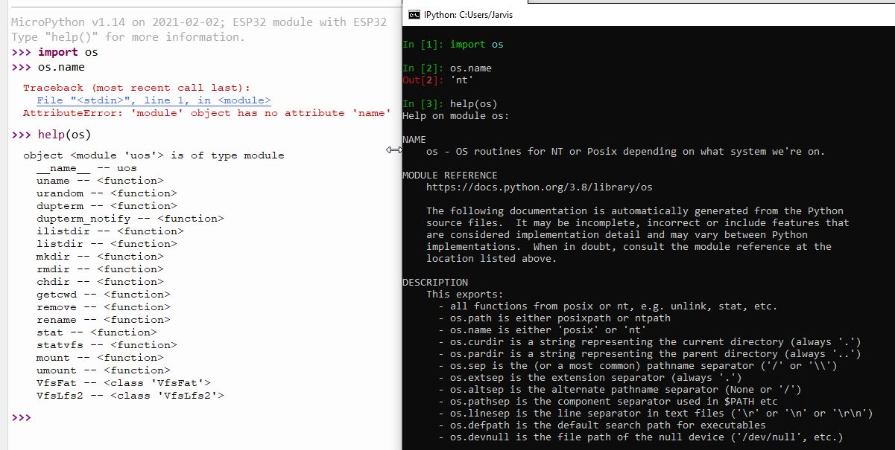
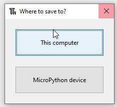
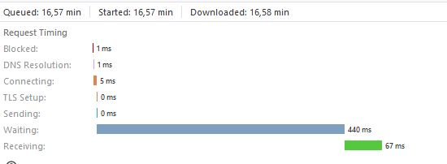

And now for something completely different... MicroPython!
Cedric Sambre, Fri 02 April 2021, Learning
Cedric Sambre, Fri 02 April 2021, Learning
Don't ask why, don't ask how, but I recently found myself purchasing a bunch of microcontrollers and circuitboards again! Today, I'll take you with me on my path through the circuits of the ESP32-CAM!
Don't worry, I just really wanted to use that Monthy Python quote.
This article is still going to be about Python, but we'll be using it on a different "level" than we usually do, but then again, it's the same...
The focus will be more on the setup and exploring the possibilities of running Python on microprocessors, there's no real advanced code in here, just a different way into our habitat!
There will also be a few Hardware requirements if you really want to dive into this stuff, but you can perfectly read along without it. All of this stuff will be available for about 15-20$ with jumper cables and everything included, and that's with a margin of 5-10$ depending on where you get your stuff!
This are just pages with a lot of info, not necessarily where I bought them. You might have this stuff laying around or find it elsewhere cheaper! FTDI programmer If you have an Arduino laying around, that can be used as well but will require some changes to the setup. I did it with an old Arduino Uno before! ESP32-CAM Module Some jumper cables, I used 4 male to female, and a single female to female jumper.

From left to right:
The ESP32 board is 2.5 cm x 4 cm or about 1 x 1.5 inches. It has a very low power usage (down to 6mA in deep sleep mode) and this esp32-cam version came with an OV2640 camera, an onboard led-flash (for the camera), sd card slot and WiFi and BLE module.
I expected nothing much when I ordered them, but oh boy, was I in for a suprise.
This part, although for some of us a bit out of our comfort zone, is really just what we've been doing since forever. Matching types and shapes.
5V goes into 5V, GND goes into GND, What you T(ransmit)X on one end must be R(eceived)X'ed on the other and vice versa. Finally, the F2F jumper goes from GPIO 0 to GND.

That last wire is because the board's internals check if that pin is set to decide if it will boot in normal mode or in programming (Flash) mode.
Inside the circuitry of the ESP32, GPIO 0 is connected to a 10KΩ Pull up resistor. This circuit creates a voltage on GPIO0 causing it to be set to 'HIGH' (meaning there is a certain voltage on it). The ESP32 boot code checks if this pin is High to decide if flash memory can be written or if it should just read it and boot on.
That might sound complex, but look at it like this:
if GPIO0:
boot_normally()
else:
enter_programming_mode()
Not like that boot code is written in Python, but again. It's the same, but different :-)
By connecting that GPIO pin to Ground, we're giving the current an easier road to take towards ground, so it wont flow to the chips GPIO0, and that pin state will turn LOW (no / low voltage), entering programming mode.
If anyone would've told me a couple years ago that I would be working on 512KB of RAM and a blasting 240MHz dual core processor again, I wouldn't believe 'em, yet here we are. But there's a problem. Just starting a blank interpreter is already using about 5MB of RAM on my Windows machine.
Usually these ESP's are programmed using C or Assembly. Surely it can't run Python?
Enter Micropython!
There's a lot to be said about the Micropython project. But the most important thing to know is that it's a very lightweight python compiler and runtime that exposes some additional libraries for direct control of the hardware.
If you've wired everything up like I said and connect the FTDI programmer to your computer, we can get to a cozy new pip environment and install esptool.
pip3 install esptool
ESP Tool is a super cool toolbox to do all sorts of programming on the different ESP chips. Here's what it can do:
esptool.py
esptool.py v3.0
usage: esptool [-h] [--chip {auto,esp8266,esp32,esp32s2,esp32s3beta2,esp32c3}] [--port PORT] [--baud BAUD] [--before {default_reset,no_reset,no_reset_no_sync}] [--after {hard_reset,soft_reset,no_reset}] [--no-stub] [--trace]
[--override-vddsdio [{1.8V,1.9V,OFF}]] [--connect-attempts CONNECT_ATTEMPTS]
{load_ram,dump_mem,read_mem,write_mem,write_flash,run,image_info,make_image,elf2image,read_mac,chip_id,flash_id,read_flash_status,write_flash_status,read_flash,verify_flash,erase_flash,erase_region,version,get_securit
y_info}
...
esptool.py v3.0 - ESP8266 ROM Bootloader Utility
positional arguments:
{load_ram,dump_mem,read_mem,write_mem,write_flash,run,image_info,make_image,elf2image,read_mac,chip_id,flash_id,read_flash_status,write_flash_status,read_flash,verify_flash,erase_flash,erase_region,version,get_security_info}
Run esptool {command} -h for additional help
load_ram Download an image to RAM and execute
dump_mem Dump arbitrary memory to disk
read_mem Read arbitrary memory location
write_mem Read-modify-write to arbitrary memory location
write_flash Write a binary blob to flash
run Run application code in flash
image_info Dump headers from an application image
make_image Create an application image from binary files
elf2image Create an application image from ELF file
read_mac Read MAC address from OTP ROM
chip_id Read Chip ID from OTP ROM
flash_id Read SPI flash manufacturer and device ID
read_flash_status Read SPI flash status register
write_flash_status Write SPI flash status register
read_flash Read SPI flash content
verify_flash Verify a binary blob against flash
erase_flash Perform Chip Erase on SPI flash
erase_region Erase a region of the flash
version Print esptool version
get_security_info Get some security-related data
So there's a few things we're going to want to do:
In my case, the FTDI programmer got detected as port COM6. So we can erase the flash with:
esptool.py --port COM6 erase_flash
You could set other arguments, but the tool figures out most of it on its own. After 12 seconds, the programmer was done.
esptool.py v3.0
Serial port COM6
Connecting........_____
Detecting chip type... ESP32
Chip is ESP32-D0WD (revision 1)
Features: WiFi, BT, Dual Core, 240MHz, VRef calibration in efuse, Coding Scheme None
Crystal is 40MHz
MAC: f4:cf:a2:99:c0:38
Uploading stub...
Running stub...
Stub running...
Erasing flash (this may take a while)...
Chip erase completed successfully in 12.6s
Hard resetting via RTS pin...
After erasing te flash, push the tiny reset button on your ESP. The FTDI tries to do a reset, but we didnt connect any Reset cables.
I read that it required soldering an extra capacitor to 2 pins on the ESP board in order to have it reset automatically, and figured it was less effort to just push the damn button :-)
Next, we want to write the Micropython firmware to the flash memory, so we can boot off of that.
It's important to note that the ESP32 documentation states the bootloader starts at address 0x1000. So that's were we'll start writing the firmware.
esptool.py --port COM6 write_flash 0x1000 E:\Users\Jarvis\Downloads\esp32-idf3-20210202-v1.14.bin
esptool.py v3.0
Serial port COM6
Connecting........
Detecting chip type... ESP32
Chip is ESP32-D0WD (revision 1)
Features: WiFi, BT, Dual Core, 240MHz, VRef calibration in efuse, Coding Scheme None
Crystal is 40MHz
MAC: f4:cf:a2:99:c0:38
Uploading stub...
Running stub...
Stub running...
Configuring flash size...
Compressed 1445632 bytes to 925476...
Wrote 1445632 bytes (925476 compressed) at 0x00001000 in 81.9 seconds (effective 141.3 kbit/s)...
Hash of data verified.
You can find the different MicroPython firmware versions for ESP32 here!
When this is done we can disconnect the wire running from GPIO0 to GND, so the ESP will know it can boot. It will start booting from that address 0x1000 where the bootloader for our micropython environment is now waiting!
It's best practise to always remove all power sources before adding or removing cables or components, so unplug your USB!
We'll leave the other wires all connected for now. TX and RX will be used to communicate with the interpreter on the board, and our 5v and GND will provide power to the ESP32 to keep it running.
We don't have to worry about the draw on the USB port, as a single USB port usually allows at least 500mA to be drawn, and from what I've found, the highest peak draw from an esp32 was about 450 mA.
I had never heard of Thonny before reading about MicroPython, but it's a very minimalistic Python IDE that also integrates smoothly with Micropython.

In order to set it to talk to our ESP32, all we have to do is go into the settings and set the interpreter accordingly:

Thonny actually even allows you to do the whole flashing process automatically (I've conveniently cropped out the option above).
But the automatic reset does not work without an extra capacitor, which i didnt know at the time, so while debugging I grew to appreciate the versatility of esptool and chose to proceed with that.
Next, you can "Stop/Restart" the backend and your interpreter should greet you!

You can clearly see what makes a platform like micropython so small and powerful.
In our ESP we have functions for accessing our filesystem (like the SD Card if we'd use one), but no extended help text or functions like os.name.
We don't even have exit(), because we don't need it! Effectively saving a fair part of memory.
>>> exit()
Traceback (most recent call last):
File "<stdin>", line 1, in <module>
NameError: name 'exit' isn't defined
Something we DO have, is a network module, since we have an on board wifi chip!
>>> import network
>>> sta_if = network.WLAN(network.STA_IF);
>>> sta_if.active(True)
True
>>> sta_if.connect("telenet-7T892F", "nofreewififoryou!")
>>> sta_if.isconnected()
True
Next we can set our ip configuration and check status etc:
>>> sta_if.status()
1010 # Meaning we got an IP
>>> sta_if.ifconfig()
('192.168.0.187', '255.255.255.0', '192.168.0.1', '42.2.24.0')
>>> help(sta_if.ifconfig())
object ('192.168.0.187', '255.255.255.0', '192.168.0.1', '42.2.24.0') is of type tuple
count -- <function>
index -- <function>
>>> sta_if.ifconfig(('192.168.0.6', '255.255.255.0', '192.168.0.1', '8.8.8.8'))
Now this is all very nice, but as soon as we pull the power from this thing, the interpreter shuts down, the memory is emptied, and things like the sta_if object above that contains our configuration will be gone.
Normally, we can just open our IDE or shell, run python with some arguments and control what script is running basically 'through' the OS.
But now, just like we had to place the bootloader on position 0x1000 in the flash memory, we'll tell Micropython what to do on startup by placing a simple boot.py on the device.
I'll start by making the network connection and setting up the static IP like above, and we'll make a GET request to a http.server running on a different machine to check if everything worked.
import network
import socket
def connect_to_wifi(wait_connection=True):
wlan = network.WLAN(network.STA_IF)
wlan.active(True)
wlan.connect("telenet-37854A", "")
if wait_connection:
while not wlan.isconnected():
pass
wlan.ifconfig(('192.168.0.6', '255.255.255.0', '192.168.0.1', '8.8.8.8'))
def send_test_request():
s = socket.socket()
ai = socket.getaddrinfo("192.168.0.4", 8000)
print("Address infos:", ai)
addr = ai[0][-1]
s.connect(addr)
s.send(b"GET /hello-from-esp HTTP/1.0\r\n\r\n")
s.recv(4096) # Let's be polite.
s.close()
def main():
connect_to_wifi()
send_test_request()
main()
And save it to micropython as boot.py, again, Thonny makes this a breeze and just gives us the choice:

After saving, just press the reset button on the ESP and soon you'll see the request come in on your http.server.
::ffff:192.168.0.6 - - [03/Feb/2021 20:02:59] "GET /hello-from-esp HTTP/1.0" 404 -
Micropython is tiny but it does have multiple package management systems, one of them being upip.
Packages on the micropython filesystem are stored in the /lib/ directory.
In order to save memory, upip doesn't come as a separate application like pip but as a module.
To install a package, we can import upip and then call the install() function.
import upip
upip.install('ujson')
upip.install('picoweb')
It's a bit limited in the sense that from the code I've seen in the current master branch, it's not possible to select specific versions.
upip will always install the latest version of the package, and when working with different firmwares, that can be annoying.
Now that we got a good idea of the basics and how our regular flow translates to micropython, it's time to take it a bit further. Sadly, the official MicroPython distribution has no support for the Camera module on the ESP32-Cam, and to be completely honest, compiling the firmware with the OV2640 camera module included is a bit of a hassle.
Things got a bit complicated here and eventually even put me to a halt. After a small break and a chat with Bob, I decided to try again with renewed effort and found a blogpost from 2019 with a pretty detailed guide to setting up camera enabled firmware.
Here's a picture of my stickerspot on my monitor!
Every picture is requested at a rate of about 400 ms average on the VGA (640x480) resolution:

Like I said, I was a bit turned down by how hard it was to get the camera working.
First, the firmware didn't have the camera module, then I found firmware that did, but wasn't compatible with picoweb.
Next it was compatible with picoweb but not with uasyncio causing picoweb to crash on every request.
Then I found a version that did everything but didn't have the network module.
For compiling my own firmware I went through a maze of versions in order to find one that was compatible with the camera and the WiFi chip, but I kept running into issues.
Even now, on every request, the interpreter is riddled with errors and warnings, the image occasionally times out or decodes incorrectly, and 400 ms average is about 2-3 FPS which is kinda slow if we wanted to stream this somehow.
MicroPython does have specialized boards out there that seem to work very well, but I don't have one of those laying around.
I reflashed the old C firmware that ran stable and wrote a piece of code to test the speed now:
import requests
CAMERA_IP = "192.168.0.10"
PROTO = "http"
ENDPOINT = "CAPTURE"
def fetch_image():
with requests.Session() as _sess:
response = _sess.get(url=f"{PROTO}://{CAMERA_IP}/{ENDPOINT}")
millis = response.elapsed.microseconds // 1000
print(f"{millis} ms")
return millis
def main():
timings = [fetch_image() for _ in range(0, 50)]
average = sum(timings) / 50
print(f"Average: {average} ms / image")
main()
And we had a 400% performance increase on a range of 50 images:
[...]
70 ms
76 ms
62 ms
194 ms
63 ms
141 ms
206 ms
69 ms
127 ms
Average: 104.06 ms / image
It's hard to say if this is because of the instability of the version I'm using, or just because MicroPython is adding a whole bunch of extra overhead cycles on the 160-240MHz ESP32 CPU in camera streaming mode, but it seems that if we care about performance for the camera, we're better off to sticking to python for just the client side.
A lot of food for thought! Allthough I didn't get to test the full power of microPython, something tells me that it will run smoother on a specialized board than on an ESP32, especially when it comes to the camera. If I manage to get my hands on one, I'll be sure to report back!
Here's the summary when it comes to the ESP32CAM:
Running micropython on these ESP boards to get acquainted with the whole process is really fun. It's also a good way into the microcontroller world if you're not familiar with C. The workload required to get specialized modules working, in my opinion, isn't really worth it when you also get a serious performance decrease with it.
Maybe it's better to resort to the original ESP32-Wrover firmware, and then build something cool around that, since it also includes face detection and recognition.
You could probably even go as far as building a FastAPI powered face-recognition doorbell with that!
I'm heading back to the lab!
--
Thanks for reading, I hope you enjoyed it as much as I enjoyed writing it. If you have any remarks or questions, you can likely find me on the Pybites Slack Channel as 'Jarvis'.
Keep calm and code in Python!
-- Cedric
Do you want to get 250+ concise and applicable Python tips in an ebook that will cost you less than 10 bucks (future updates included), check it out here.

"The discussions are succinct yet thorough enough to give you a solid grasp of the particular problem. I just wish I would have had this book when I started learning Python." - Daniel H
"Bob and Julian are the masters at aggregating these small snippets of code that can really make certain aspects of coding easier." - Jesse B
"This is now my favourite first Python go-to reference." - Anthony L
"Do you ever go on one of those cooking websites for a recipe and have to scroll for what feels like an eternity to get to the ingredients and the 4 steps the recipe actually takes? This is the opposite of that." - Sergio S